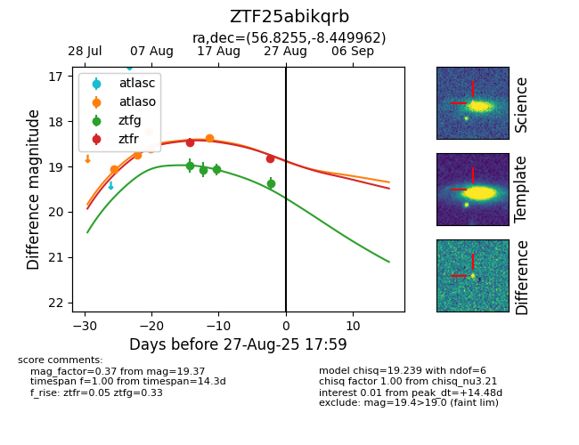

Target ZTF25abikqrb at 2025-08-27 17:59, see:
FINK: fink-portal.org/ZTF25abikqrb
Lasair: lasair-ztf.lsst.ac.uk/objects/ZTF25abikqrb
ALeRCE: alerce.online/object/ZTF25abikqrb
alt names
ZTF25abikqrb (ztf,fink)
coordinates:
equatorial (ra, dec) = (56.8255,-8.44996)
galactic (l, b) = (197.1677,-44.47691)
photometry
last atlaso=18.37, ztfg=19.37, ztfr=18.83
5 atlaso, 4 ztfg, 2 ztfr detections
